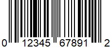
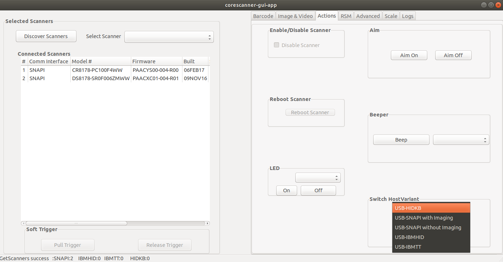

Overview
This chapter provides information for evaluating Zebra Scanner SDK software components using the SDK test utilities.
NOTE For supported scanner attributes (parameters), refer to the scanner Product Reference Guide. This guide may also contain an appendix listing non-parameter attributes that most Zebra scanners support.
Test Utilities
The Zebra Scanner SDK includes the following test utilities that demonstrate SDK functionality to help you gain an understanding of the Zebra Scanner SDK.
- Zebra Scanner SDK C++ GUI Demonstration Application, GTK
- Zebra Scanner SDK C++ Console Sample Application, Commandline (see Chapter 5, SAMPLE SOURCE CODE)
NOTE You may need to install all dependent packages before installing the CoreScanner.
The Zebra Scanner SDK test utilities support the following functionality:
- Discovery of asset tracking information
- Barcode scanning
- Image and video capture
- Attribute query and setting
- Host variant switching
- Firmware upgrade.
Scanner SDK C++ GTK-based Sample Application
The Scanner SDK C++ Sample Application demonstrates SDK functionality by simulating an application that communicates with the Scanner SDK. It includes C++ source code and solution and project files for further reference.
Table 1: Test Utility Buttons and Fields by Tab
| Button or Field | Description |
|---|---|
| Discover Scanners | Invoke GetScanners methods and refresh the scanner list. |
| Select Scanner | Select the scanner to invoke the command. |
| Connected Scanners | List all connected scanners regardless of mode. |
| Pull Trigger | Soft Pull Trigger the scanner for barcode, image, and video actions. |
| Release Trigger | Soft Release Trigger the scanner for barcode, image, and video actions |
| Barcode Tab | |
| Clear | Clear the barcode data area. |
| Decoded Barcode | Display the label value of the scanned barcode. |
| Symbology | Display the symbology of the scanned barcode. |
| Image/Video Tab | |
| Image | Invoke image capture mode. |
| Video | Invoke video capture mode |
| Image Type | Select JPG, TIFF, or BMP image type. |
| Enable Video View Finder | Enable the view finder in image mode. |
| Save Image | Save the captured image. |
| Scanner Actions Tab | |
| Enable/Disable Scanner | Enable/Disable the scanner for data/image/video capture initiation. |
| Aim | Switch on and off Aim control of the scanner. |
| Beeper | Beep the beeper of the scanner. |
| Reboot Scanner | Reboot the scanner. |
| LED | Light the LED(s) on the scanner. |
| Switch Host Variant | Switch the scanner host type; you can select a silent feature and persist the variant change |
| RSM Tab | |
| Get All IDs | Get all supported attribute IDs from the selected scanner. |
| Get Value | Select one or more attribute IDs and get their values. |
| Next Value | Get the next attribute value given the current attribute number. |
| Store Value | Store value(s) for selected attribute(s). |
| Set Value | Set value(s) for selected attribute(s). |
| Select All | Select all attribute IDs at the RSM data viewer. |
| Clear All | Clear all attribute data at the RSM data viewer. |
| Advance Tab | |
| Firmware Update Operations | Update firmware and launch the new firmware on the scanner. |
| Browse | Browse the firmware file (*.DAT) or plug-in file (*.SCNPLG). |
| Update | Initiate firmware update. |
| Abort | Abort firmware update. |
| Launch | Once firmware update finishes launch the new firmware in the scanner. |
| Update Configuration | Update configuration file on the scanner. |
| Browse | Browse the configuration file(.scnfg). |
| Scale Tab | |
| Read Weight | Retrieves the measured weight |
| Zero Scale | Sets the scale based on a reference item |
| Reset Scale | Clearing out previously set weight references |
| Weight Unit | Unit used to measure the weight |
| Weight Measured | Weight measured by the scanner |
| Logs Tab | |
| Event Log | Command and event log; logs initiated commands. |
| XML Log | Displays output of each function if available. |
| Clear Event Log | Clear command and event log area. |
| Clear XML Log | Clear XML log area. |
Verifying Scanner SDK Functionality
This section provides test cases to demonstrate Zebra Scanner SDK functionality. See Installing the CoreScanner and SDK for more information.
Scanner Discovery / Asset Tracking / Successful SDK Installation Validation
- Connect a Zebra USB scanner(s) to the host computer.
-
Scan one of the following barcodes to place the scanner in USB Hand-held or USB SNAPI mode.


-
Launch the Zebra Scanner SDK Sample Utility on the host computer.
Figure 2: Discover Scanners on C++ Sample Application - Use the change directory (cd) command to change to the
/usr/share/zebra-scanner/samples/gui-appdirectory and run the corescanner-gui-app executable file. -
Click Discover Scanners to display all connected scanners. This executes an
Openfor all types of scanners and anExecCommandwith theREGISTER_FOR_EVENTSmethod using the following XML and aGetScannersAPI call:<inArgs> <cmdArgs> <arg-int>6</arg-int> <arg-int>1,2,4,8,16,32</arg-int> </cmdArgs> </inArgs>
NOTE The first <inArgs> tag in the XML contains the number of events to register, in this example, 6. The second <arg-int> tag contains the event IDs to register separated by commas (",").
Table 2: Supported Event IDs
| Event Name | Event ID |
|---|---|
| SUBSCRIBE_BARCODE | 1 |
| SUBSCRIBE_IMAGE | 2 |
| SUBSCRIBE_VIDEO | 4 |
| SUBSCRIBE_RMD | 8 |
| SUBSCRIBE_PNP | 16 |
| SUBSCRIBE_OTHER | 32 |
The GetScanners API call produces the following XML code:
<?xml version="1.0" encoding="UTF-8" ?>
<scanners>
<scanner type="SNAPI">
<scannerID>1</scannerID>
<serialnumber>7116000501003</serialnumber>
<GUID>A2E647DED2163545B18BCEBD0A2A133D</GUID>
<VID>1504</VID>
<PID>6400</PID>
<modelnumber>DS670-SR20001ZZR</modelnumber>
<DoM>27APR07</DoM>
<firmware>NBRPUAAC</firmware>
</scanner>
</scanners>
Table 3: GetScanners Output For This Example
| Scanner Information | Value | Description |
|---|---|---|
| Scanner ID | 1 | A unique ID that the SDK assigns to a scanner. Any scanner specific method executed via ExecCommand must point to this. |
| Serial Number | 7116000501003 | Device serial number printed on the label. |
| Model Number | DS670-SR20001ZZR | Device model number. |
| Date of Manufacture | 27APR07 | Device date of manufacture. |
| Firmware Version | NBRPUAAC | Current firmware version. |
| H/W GUID | A2E647DED2163545B18BCEBD0A2A133D | Hardware Unique ID. |
The XML consists of the scanner type, scanner ID, serial number, GUID, VID, PID, model number, date of manufacture, and firmware version of the connected scanners.
The Connected Scanners list displays all discovered scanners by processing the XML from the GetScanners command along with asset tracking information returned by querying device parameters. This information indicates the SDK was installed successfully.
Barcode Scanning
Connect and discover a scanner. See Verifying Scanner SDK Functionality
Scanning a barcode returns decoded data as XML on the Barcode tab. To illustrate the implementation, the sample application displays only the barcode data below the XML data.
Example
Scan the following barcode after discovering the scanner in the sample application.
This returns the following XML:
<?xml version="1.0" encoding="UTF-8" ?>
<outArgs>
<scannerID>2</scannerID>
<arg-xml>
<scandata>
<modelnumber>DS670-SR20001ZZR</modelnumber>
<serialnumber>7116000501003</serialnumber>
<GUID>A2E647DED2163545B18BCEBD0A2A133D</GUID>
<datatype>8</datatype>
<datalabel>0x30 0x31 0x32 0x33 0x34 0x35 0x36 0x37 0x38 0x39 0x31 0x32</datalabel>
<rawdata>0x30 0x31 0x32 0x33 0x34 0x35 0x36 0x37 0x38 0x39 0x31 0x32</rawdata>
</scandata>
</arg-xml>
</outArgs>
The sample application processes this XML and displays the decoded barcode in the Decoded Barcode text box, and the symbology in the Symbology text box.
Image and Video Capture
- Connect and discover an imaging scanner. See Verifying Scanner SDK Functionality
-
Select a SNAPI mode scanner ID from the Select Scanner drop-down list. The selection appears in the Connected Scanners list.
NOTE If no SNAPI scanner appears in the Connected Scanners list, connect an imaging scanner that supports image/video transfer. For a list if scanner models and their supported communication modes, refer to the Scanner SDK for Windows website: www.zebra.com/scannersdkforwindows.
Alternatively, select the SNAPI mode scanner in the Connected Scanners area. The selected scanner's ID appears in the Select Scanner drop-down list.
Figure 5: Scanner Selection - Select the Image & Video tab.
-
Select an image type of JPG, TIFF, or BMP. This executes an ExecCommand API call using the ATTR_SET method and following XML code:
<inArgs> <scannerID>1</scannerID> <cmdArgs> <arg-xml> <attrib_list> <attribute> <id>304</id> <datatype>B</datatype> <value>4</value> </attribute> </attrib_list> </arg-xml> </cmdArgs> </inArgs>NOTE The
<scannerID>tag in the XML contains the scanner ID selected in the Connected Scanners list. The<id>tag contains the image file type parameter of the selected scanner, in this example, 304. The value 4 indicates the image type the user gets from the scanner. See following table.Table 4: Image Types
Image Type Value BMP_FILE_SELECTION 3 TIFF_FILE_SELECTION 4 JPEG_FILE_SELECTION 1 NOTE These values may vary by scanner model. Refer to the scanner Product Reference Guide for information on scanner parameters.
-
Check Enable Video View Finder. This executes an
ExecCommandAPI call with theATTR_SETmethod and the following XML code:<inArgs> <scannerID>1</scannerID> <cmdArgs> <arg-xml> <attrib_list> <attribute> <id>324</id> <datatype>B</datatype> <value>1</value> </attribute> </attrib_list> </arg-xml> </cmdArgs> </inArgs>NOTE The
<scannerID>tag in the XML contains the ID of the scanner selected in the Connected Scanners list. The<id>tag contains the video view finder parameter number of the scanner and value 1 indicates that the view finder is enabled. A value 0 indicates the view finder is disabled. -
Click either Image to put the scanner into image capture mode or Video to put the scanner into video capture mode. This executes an
ExecCommandAPI call using theDEVICE_CAPTURE_IMAGEmethod for Image, orDEVICE_CAPTURE_VIDEOmethod for Video, with the following XML code:<inArgs> <scannerID>1</scannerID> </inArgs> -
Click Pull Trigger on the bottom left side of the utility. The scanner captures an image if in image capture mode, or begins video capture if in video capture mode. Click Release Trigger to stop video capture.
Clicking Pull Trigger or Release Trigger executes an ExecCommand API call using the corresponding
DEVICE_PULL_TRIGGERorDEVICE_RELEASE_TRIGGERmethod with the following XML code:<inArgs> <scannerID>1</scannerID> </inArgs>NOTE You can use the trigger on the scanner to start and stop image or video capture instead of the soft trigger buttons provided in the sample utility.
Figure 6: Captured Image Displayed on the Image snd Video TabIf you registered with ImageEvent you receive an image event for the pull trigger when in image mode. If you registered with VideoEvent you receive a video event for the pull trigger when in video mode.
Beep the Beeper
Zebra scanners sound the beeper when the host system invokes the Beeper method.
- Connect and discover a scanner. See Verifying Scanner SDK Functionality
- Select a SNAPI or IBM mode scanner ID from the Select Scanner drop-down list. The selection appears in the Connected Scanners list.
-
On the Actions tab, select the beep sequence.
Figure 7: Beep Values -
Click Beep to execute an ExecCommand API call with the SET_ACTION method and following XML code:
<inArgs> <scannerID>1</scannerID> <cmdArgs> <arg-int>2</arg-int> </cmdArgs> </inArgs>NOTE The <scannerID> tag in the XML contains the scanner ID selected in the Connected Scanners list. The <arg-int> tag in the XML contains the beep value selected in the Beeper drop-down list.
Flash the LED
Zebra scanners flash an LED when the host system initiates the flash LED method.
- Connect and discover a scanner. See Verifying Scanner SDK Functionality
- Select a SNAPI or OPOS/IBM OPOS mode scanner ID from the Select Scanner drop-down list. The selection appears in the Connected Scanners list.
-
On the Actions tab, select the desired LED.
Figure 8: LED Selection -
Click On to execute an ExecCommand API call with the SET_ACTION method and the following XML code:
<inArgs> <scannerID>1</scannerID> <cmdArgs> <arg-int>43</arg-int> </cmdArgs> </inArgs>NOTE The
<scannerID>tag in the XML contains the scanner ID selected in the Connected Scanners list. The<arg-int>tag in the XML contains the corresponding action value to turn on or off the LED selected from the drop-down list.To control the LED, change the action value in the
<arg-int>tag.Click Off to execute an
ExecCommandAPI call using theDEVICE_LED_OFFmethod with the same XML code that turned it on.NOTE The Beep the Beeper and Flash the LED XML code examples are the same except for the method name. All XML used in an
ExecCommandAPI call has a common format. The</inArgs>tag always contains the<scannerID>tag and optionally contains<cmdArgs>tags and<arg-xml>tags inside the</inArgs>tag.<cmdArgs>can contain<arg-string>,<arg-bool>, and<arg-int>tags. Execute different commands for the same XML by changing the method parameter in ExecCommand.
Attribute and Parameter Query
To query parameters from a specific device, such as the Date of Manufacture and Firmware Version:
- Connect and discover a scanner. See Verifying Scanner SDK Functionality
- Select the scanner to query from the list of Connected Scanners.
-
On the RSM tab, click
Get All IDsto retrieve a list of all attribute IDs supported by the scanner. This executes anExecCommandAPI call with theATTR_GETALLmethod and the following XML:<inArgs> <scannerID>1</scannerID> </inArgs>NOTE The <scannerID> tag in the XML contains the ID of the scanner selected in the Connected Scanners list
The sample application receives the following XML output and displays the corresponding attribute IDs.
<?xml version="1.0" encoding="UTF-8" ?> <outArgs> <scannerID>1</scannerID> <arg-xml> <modelnumber>DS670-SR20001ZZR</modelnumber> <serialnumber>7116000501003</serialnumber> <GUID>A2E647DED2163545B18BCEBD0A2A133D</GUID> <response> <opcode>5000</opcode> <attrib_list> <attribute name="">0</attribute> <attribute name="">1</attribute> <attribute name="">2</attribute> <attribute name="">3</attribute> <attribute name="">4</attribute> <attribute name="">5</attribute> <attribute name="">6</attribute> <attribute name="">7</attribute> <attribute name="">8</attribute> <attribute name="">9</attribute> <attribute name="">10</attribute> <attribute name="">11</attribute> <attribute name="">12</attribute> <attribute name="">13</attribute> <attribute name="">14</attribute> <attribute name="">15</attribute> <attribute name="">16</attribute> <attribute name="">17</attribute> <attribute name="">18</attribute> <attribute name="">19</attribute> <attribute name="">20</attribute> <attribute name="">21</attribute> <attribute name="">22</attribute> <attribute name="">23</attribute> <attribute name="">24</attribute> <attribute name="">25</attribute> <attribute name="">26</attribute> <attribute name="">27</attribute> <attribute name="">28</attribute> <attribute name="">29</attribute> <attribute name="">30</attribute> <attribute name="">31</attribute> <attribute name="">34</attribute> <attribute name="">35</attribute> <attribute name="">36</attribute> <attribute name="">37</attribute> <attribute name="">38</attribute> <attribute name="">39</attribute> <attribute name="">655</attribute> <attribute name="">656</attribute> <attribute name="">657</attribute> <attribute name="">658</attribute> <attribute name="">659</attribute> <attribute name="">665</attribute> <attribute name="">670</attribute> <attribute name="">672</attribute> <attribute name="">673</attribute> <attribute name="">705</attribute> <attribute name="">716</attribute> <attribute name="">718</attribute> <attribute name="">721</attribute> <attribute name="">724</attribute> <attribute name="">726</attribute> <attribute name="">727</attribute> <attribute name="">728</attribute> <attribute name="">730</attribute> <attribute name="">731</attribute> <attribute name="">734</attribute> <attribute name="">735</attribute> <attribute name="">745</attribute> <attribute name="">6000</attribute> <attribute name="">6001</attribute> <attribute name="">6002</attribute> <attribute name="">6003</attribute> <attribute name="">6004</attribute> <attribute name="">20004</attribute> <attribute name="">20006</attribute> <attribute name="">20007</attribute> <attribute name="">20008</attribute> <attribute name="">20009</attribute> <attribute name="">20010</attribute> <attribute name="">20011</attribute> <attribute name="">20013</attribute> </attrib_list> </response> </arg-xml> </outArgs>NOTE To find the corresponding attribute names, refer to the scanner Product Reference Guide, available on the Zebra Support website. Attributes include configuration parameters, monitored data, and asset tracking information.
Figure 9: Get RSM IDs
Querying Specific Attributes
To query attributes, select attribute IDs and click Get Value. This executes an ExecCommand API call with the ATTR_GET method and the following XML.
<inArgs>
<cmdArgs>
<scannerID>1</scannerID>
<arg-xml>
<attrib_list>535,20004,1,140,392</attrib_list>
</arg-xml>
</cmdArgs>
</inArgs>
note The <scannerID> tag in the XML contains the ID of the scanner selected in the Connected Scanners list and the <attrib_list> tag with the attribute IDs selected on the RSM tab.
For example, to retrieve the values of the Date of Manufacture, Firmware Version, UPC -A status, Beeper Volume, and ADF Rule parameters, select these attribute IDs and click Get Value. This executes an ExecCommand API call with the ATTR_GET method and the XML shown above. See the following table for the corresponding IDs
Table 5: Device Parameters to Query
| Parameter | Attribute # |
|---|---|
| Date of Manufacture | 535 |
| Firmware Version | 20004 |
| UPC A status | 1 |
| Beeper Volume | 140 |
| ADF Rule | 392 |
After a successful command, the output XML appears in the Logs tab as follows:
<?xml version="1.0" encoding="UTF-8" ?>
<outArgs>
<scannerID>1</scannerID>
<arg-xml>
<modelnumber>DS670-SR20001ZZR</modelnumber>
<serialnumber>7116000501003</serialnumber>
<GUID>A2E647DED2163545B18BCEBD0A2A133D</GUID>
<response>
<opcode>5001</opcode>
<attrib_list>
<attribute>
<id>535</id>
<name></name>
<datatype>S</datatype>
<permission>R</permission>
<value>27APR07</value>
</attribute>
<attribute>
<id>20004</id>
<name></name>
<datatype>S</datatype>
<permission>R</permission>
<value>DS6707X4</value>
</attribute>
<attribute>
<id>1</id>
<name></name>
<datatype>F</datatype>
<permission>RWP</permission>
<value>True</value>
</attribute>
<attribute>
<id>140</id>
<name></name>
<datatype>B</datatype>
<permission>RWP</permission>
<value>0</value>
</attribute>
<attribute>
<id>392</id>
<name></name>
<datatype>A</datatype>
<permission>RWP</permission>
<value>0x00 0x00 0x00 0x00 0x00 0x00 0x00 0x00 0x00 0x00 0x00 0x00 0x00 0x00 0x00 0x00 0x00 0x00 0x00 0x00 0x00 0x00 0x00 0x00 0x00 0x00 0x00 0x00 0x00 0x00 0x00 0x00 0x00
0x00 0x00 0x00 0x00 0x00 0x00 0x00 0x00 0x00 0x00 0x00 0x00 0x00 0x00 0x00 0x00 0x00 0x00
0x00 0x00 0x00 0x00 0x00 0x00 0x00 0x00 0x00 0x00 0x00 0x00 0x00 0x00 0x00 0x00 0x00 0x00
0x00 0x00 0x00 0x00 0x00 0x00 0x00 0x00 0x00 0x00 0x00 0x00 0x00 0x00 0x00 0x00 0x00 0x00
0x00 0x00 0x00 0x00 0x00 0x00 0x00 0x00 0x00 0x00 0x00 0x00 0x00 0x00 0x00 0x00 0x00 0x00
0x00 0x00 0x00 0x00 0x00 0x00 0x00 0x00 0x00 0x00 0x00 0x00 0x00 0x00 0x00 0x00 0x00 0x00
0x00 0x00 0x00 0x00 0x00 0x00 0x00 0x00 0x00 0x00 0x00 0x00 0x00 0x00 0x00 0x00 0x00 0x00
0x00 0x00 0x00 0x00 0x00 0x00 0x00 0x00 0x00 0x00 0x00 0x00 0x00 0x00 0x00 0x00 0x00 0x00
0x00 0x00 0x00 0x00 0x00 0x00 0x00 0x00 0x00 0x00 0x00 0x00 0x00 0x00 0x00 0x00 0x00 0x00
0x00 0x00 0x00 0x00 0x00 0x00 0x00 0x00 0x00 0x00 0x00 0x00 0x00 0x00 0x00 0x00 0x00 0x00
0x00 0x00 0x00 0x00 0x00 0x00 0x00 0x00 0x00 0x00 0x00 0x00</value>
</attribute>
</attrib_list>
</response>
</arg-xml>
</outArgs>
The sample application processes this XML and displays the output on the RSM tab.
 Figure 10: Get Attribute Values
Figure 10: Get Attribute Values
Parameter Setting (Device Configuration)
To set parameters of a specific device, such as UPC-A status or beeper volume:
- Query the parameter. See Attribute and Parameter Query
- To set an attribute, select and edit the attribute value in the RSM window.
-
Select the row of the updated attribute and click Set Value or Store Value. This executes an
ExecCommandAPI call using theATTR_SETorATTR_STOREmethod and the following XML code:<inArgs> <scannerID>1</scannerID> <cmdArgs> <arg-xml> <attrib_list> <attribute> <id>1</id> <datatype>F</datatype> <value>False</value> </attribute> </attrib_list> </arg-xml> </cmdArgs> </inArgs>
NOTE The <scannerID> tag in the XML contains the ID of the scanner selected in the Connected Scanners list and the <attrib_list> tag contains the <attribute> tags selected on the RSM tab.
Examples
The following examples demonstrate how to enable or disable a symbology, program an ADF rule, control beeper volume, and control LEDs.
Before starting an example, scan the Set All Defaults barcode to return all parameters to default values (replacing the scanner's current settings). Refer to the scanner Product Reference Guide for default values.
Enable / Disable a Symbology
To disable a symbology, refer to the scanner Product Reference Guide to determine the attribute ID. The attribute ID of the UPC-A parameter is 1. To change and validate the setting:
-
Put the scanner into USB OPOS (Hand-held) or USB SNAPI mode by scanning one of the barcodes in Scanner Discovery / Asset Tracking / Successful SDK Installation Validation, or using the procedure in Host Variant Switching.
- Get the value of attribute ID 1, which is TRUE if you scanned the Set All Defaults barcode.
- To disable UPC-A, change the value of attribute ID 1 to FALSE on the RSM tab, and click Set Value or Store Value. This executes an
ExecCommandAPI call with theATTR_SETorATTR_STOREmethod and the XML shown in Parameter Setting.
If the command was successful, the scanner cannot scan the following UPC-A barcode.
Program an ADF Rule
To create an ADF rule to add the prefix "A" to any barcode and an Enter key after, modify the scanner ADF buffer. The attribute ID of the ADF rule is 392.
To change and validate the setting:
USB Host Type = HID Keyboard Wedge
-
Scan the following barcode, or see Host Variant Switching, to switch the scanner to HID keyboard mode. This enables the scanner to send data to any text editor
- Open a text editor such as Windows Notepad.
- Scan the Sample UPC-A Barcode with the text editor as the active window to insert the barcode data "012345678912" in the window.
- Put the scanner into USB OPOS (Hand-held) or USB SNAPI mode by scanning one of the barcodes in Scanner Discovery / Asset Tracking / Successful SDK Installation Validation, or using the procedure in Host Variant Switching
- In the sample application, change the value of the selected scanner's attribute 392 to:
0x01 0x0C 0x11 0xF4 0x14 0x10 0x47 0x0D -
Click Store Value. The sample application executes an ExecCommand API call using the ATTR_STORE method and the following XML code:
<inArgs> <scannerID>1</scannerID> <cmdArgs> <arg-xml> <attrib_list> <attribute> <id>392</id> <datatype>A</datatype> <value>0x01 0x0C 0x11 0xF4 0x14 0x10 0x47 0x0D</value> </attribute> </attrib_list> </arg-xml> </cmdArgs> </inArgs> - After successfully executing the command, repeat steps 1 - 3.
The text entered in Notepad is "A012345678912<Enter key>".
Beeper Volume Control
The beeper volume attribute ID is 140, and the scanner beeper has three volume levels:
- 2 = Low
- 1 = Medium
- 0 = High
To change and validate this setting:
- Put the scanner into USB OPOS (Hand-held) or USB SNAPI mode by scanning one of the barcodes in Scanner Discovery / Asset Tracking / Successful SDK Installation Validation, or using the procedure in Host Variant Switching.
- Scan the Sample UPC-A Barcode and listen to the beeper
- Select attribute ID 140 from the RSM attribute grid. Its value is 0 if you scanned the Set All Defaults barcode at the beginning of the example.
-
Change the value to 2 and click Set Value or Store Value. The sample application executes an
ExecCommandAPI call with theATTR_SETorATTR_STOREmethod and the following XML code:<inArgs> <scannerID>1</scannerID> <cmdArgs> <arg-xml> <attrib_list> <attribute> <id>140</id> <datatype>B</datatype> <value>2</value> </attribute> </attrib_list> </arg-xml> </cmdArgs> </inArgs> - Scan the Sample UPC-A Barcode again. The beeper volume is lower if the command was successful.
NOTE Changes made using the Store Value commands are permanent, persisting over power down and power up cycles. Changes made using the Set Value command are temporary and are discarded after the next power down.
Beeper and LED Control
Attribute ID for beeper and LED control is 6000. To change and validate this setting:
- Put the scanner into USB OPOS (Hand-held) or USB SNAPI mode by scanning one of the barcodes in Scanner Discovery / Asset Tracking / Successful SDK Installation Validation, or using the procedure in Host Variant Switching.
-
To turn on the scanner LED, execute an
ExecCommandAPI call with theATTR_SETorATTR_STOREmethod and the following XML code:<inArgs> <scannerID>1</scannerID> <cmdArgs> <arg-xml> <attrib_list> <attribute> <id>6000</id> <datatype>X</datatype> <value>43</value> </attribute> </attrib_list> </arg-xml> </cmdArgs> </inArgs>
NOTE You can execute several actions by changing the
Host Variant Switching
- Connect and discover a scanner. See Scanner Discovery / Asset Tracking / Successful SDK Installation Validation.
- On the Actions tab, select a target mode from the Switch Host Variant drop-down list.
-
If desired, select Permanent Change or Silent Reboot options (hidden by the Switch Host Variant drop-down list).
Figure 11: Changing Host Mode -
Click Switch Host Mode to reboot the scanner and set the target mode. This executes an
ExecCommandAPI call with theDEVICE_SWITCH_HOST_MODEmethod and the following XML code:<inArgs> <scannerID>1</scannerID> <cmdArgs> <arg-string>XUA-45001-1</arg-string> <arg-bool>TRUE</arg-bool> <arg-bool>FALSE</arg-bool> </cmdArgs> </inArgs>NOTE The
<scannerID>tag in the XML code contains the ID of the scanner selected in the Connected Scanners list. The<arg-string>tag contains the string code of the selected target host variant.NOTE The first
<arg-bool>tag contains the boolean value for the silent reboot option. A value of TRUE silently reboots the scanner (without reboot beeps). The second<arg-bool>tag contains the boolean value for the permanent change option. A value of TRUE persists the target host variant over power down and power up cycles. Otherwise the host variant change is temporary until the next reboot.
HID Keyboard mode only supports the IBM Hand-held USB and SNAPI host variants.
Firmware Upgrade
Firmware Upgrade Scenarios
There are three firmware upgrade scenarios.
Loading a compatible, different version of firmware to the scanner
Firmware upgrade downloads the firmware file to the scanner and activates the firmware. Activation takes approximately 50 seconds, during which the LED blinks red and the scanner does not respond to network queries.
When activation (programming) completes, the scanner reboots. The LED turns off, the scanner emits a power up beep, and powers up with the new firmware.
A firmware download can take up to 20 minutes depending on the connection speed between the POS terminal and the scanner, the operating mode of the scanner, and the size of the firmware file.
Loading the same version of firmware that is on the scanner
A firmware file can include multiple components. When loading the same version of firmware, some components in the firmware file may be the same as those on the scanner, while other components are different.
Before loading firmware, the scanner driver reads the header information of each firmware component to validate the model number and version, and only loads components that are different on the scanner. For example, if the first component downloading from the firmware file is the same version as one already on the scanner, the component does not load.
Loading an incompatible version of firmware on the scanner
This occurs when attempting to load firmware designed for one scanner model, for example a DS6707, onto another incompatible scanner model, for example the DS6708.
A firmware file can include multiple components. Before downloading firmware to the scanner, the scanner driver reads the header information of each firmware component to validate the model number and version. If the firmware component model number does not match the scanner, the component does not load. This process continues, verifying each remaining component in the firmware file.
Firmware Upgrade Procedure
- Connect and discover a scanner. See Scanner Discovery / Asset Tracking / Successful SDK Installation Validation.
-
Use 123Scan to obtain the latest scanner plug-in which contains the firmware .DAT file.
- Download and launch 123Scan from www.zebra.com/123Scan
-
Using 123Scan, confirm you have the latest scanner plug-in, which contains a number of files including the firmware file and release notes.
- To download the latest scanner plug-ins from within 123Scan2, on the help menu, select Check for updates.
- For a list of scanner models, plug-ins, and firmware files supported in 123Scan2 on the help menu, select Supported scanners and plug-ins.
- The plug-ins are located in one of the following 123Scan2 sub folders:
For Windows XP systems: [WINDOWSDRIVE]\ Documents and Settings\ [USERNAME]\Application Data\123Scan2\Plug-ins
For later versions of Windows: [WINDOWSDRIVE]\Users\ Application Data\123Scan2\Plug-ins
-
Extract the firmware .DAT file from 123Scan plug-in:
- Rename the file extension of the plug-in from .SCNPLG to .ZIP
- Use a standard archive tool, such as WinZip, to extract the firmware update file which contains the file extension .DAT
For example, the DS9808 plug-in is named DS9808-COMMON SR MODELS-S-017.SCNPLG. Change .SCNPLG to .ZIP and access the firmware file CAAABS00-006-R02D0.DAT using WinZip.
- In the sample application, select the Advanced tab and browse to and select the firmware .DAT file.
-
Check the Bulk Update option if desired.
NOTE There are two communication interfaces (channels), USB HID or the faster USB Bulk, to perform a firmware update. Most SNAPI devices support USB Bulk firmware update but some do not. To determine if your scanner supports USB Bulk mode, refer to the Scanner SDK for Windows website: www.zebra.com/scannersdkforwindows.
-
Click Update to transfer the firmware file to the scanner. This executes an
ExecCommandAPI call with theUPDATE_FIRMWAREmethod and the following XML code:<inArgs> <scannerID>1</scannerID> <cmdArgs> <arg-string>D:\scanner\ScannerFW\DS6707\DS6707X4.DAT</arg-string> <arg-int>2</arg-int> </cmdArgs> </inArgs>NOTE The
<scannerID>tag in the XML contains the ID of the scanner selected in the Connected Scanners list. The<arg-string>tag contains the path to the firmware file. The<arg-int>tag contains 2 if the bulk update option is selected, or 1 if not. -
If you have registered with
ScanRMDEvent, you receive six types of events per firmware update cycle, shown in table below.Table 6: Firmware Update Event Types
Event Value Event Type Description 11 SCANNER_UF_SESS_START Triggered when flash download session starts 12 SCANNER_UF_DL_START Triggered when component download starts 13 SCANNER_UF_DL_PROGRESS Triggered when block(s) of flash completed 14 SCANNER_UF_DL_END Triggered when component download ends 15 SCANNER_UF_SESS_END Triggered when flash download session ends 16 SCANNER_UF_STATUS Triggered when update error or status
The OnScanRMDEvent function has two parameters:
- The first short type parameter contains the event type described above.
- The second parameter contains an XML for the event types in table above. Processing the XML provides further information. The receiving XML formats for each event types are as follows, and include information about the scanner it updates.
NOTE A firmware file can include multiple components. Before downloading firmware to the scanner, the scanner driver reads the header information of each firmware component to validate the model number and version. If the component model number does not match the scanners, the component does not load. This process verifies each component in the firmware file.
-
SCANNER_UF_SESS_START
<?xml version="1.0" encoding="UTF-8"?> <outArgs> <scannerID>1</scannerID> <arg-xml> <sess_start> <modelnumber>DS670-SR20001ZZR</modelnumber> <serialnumber>S/N:7108E15933CA1B4BB776F7BDB4B3F826</serialnumber> <GUID>7108E15933CA1B4BB776F7BDB4B3F826</GUID> <maxcount>3075</maxcount> <status>0</status> </sess_start> </arg-xml> </outArgs>NOTE The
<maxcount>tag contains the number of records in the firmware file. -
SCANNER_UF_DL_START
<?xml version="1.0" encoding="UTF-8"?> <outArgs> <scannerID>1</scannerID> <arg-xml> <dl_start> <modelnumber>DS670-SR20001ZZR</modelnumber> <serialnumber>S/N:7108E15933CA1B4BB776F7BDB4B3F826</serialnumber> <GUID>7108E15933CA1B4BB776F7BDB4B3F826</GUID> <software_component>0</software_component> <status>0</status> </dl_start> </arg-xml> </outArgs>NOTE The
<software_component>tag contains the component number that starts downloading. -
SCANNER_UF_DL_PROGRESS
<?xml version="1.0" encoding="UTF-8"?> <outArgs> <scannerID>1</scannerID> <arg-xml> <dl_progress> <modelnumber> DS670-SR20001ZZR </modelnumber> <serialnumber>S/N:7108E15933CA1B4BB776F7BDB4B3F826</serialnumber> <GUID>7108E15933CA1B4BB776F7BDB4B3F826</GUID> <software_component>1</software_component> <progress>7</progress> <status>600</status> </dl_progress> </arg-xml> </outArgs>NOTE The
<progress>tag contains the record number that is currently downloading. Thetag contains the record of the download progress. 600 indicates the resident firmware. -
SCANNER_UF_DL_END
<?xml version="1.0" encoding="UTF-8"?> <outArgs> <scannerID>1</scannerID> <arg-xml> <dl_end> <modelnumber> DS670-SR20001ZZR </modelnumber> <serialnumber>S/N:7108E15933CA1B4BB776F7BDB4B3F826</serialnumber> <GUID>7108E15933CA1B4BB776F7BDB4B3F826</GUID> <software_component>2</software_component> <size>0</size> <status>0</status> </dl_end> </arg-xml> </outArgs> -
SCANNER_UF_SESS_END
<?xml version="1.0" encoding="UTF-8"?> <outArgs> <scannerID>1</scannerID> <arg-xml> <sess_end> <modelnumber> DS670-SR20001ZZR </modelnumber> <serialnumber>S/N:7108E15933CA1B4BB776F7BDB4B3F826</serialnumber> <GUID>7108E15933CA1B4BB776F7BDB4B3F826</GUID> <status>0</status> </sess_end> </arg-xml> </outArgs> -
SCANNER_UF_STATUS
<?xml version="1.0" encoding="UTF-8"?> <outArgs> <scannerID>1</scannerID> <arg-xml> <sess_info> <modelnumber> DS670-SR20001ZZR </modelnumber> <serialnumber>S/N:7108E15933CA1B4BB776F7BDB4B3F826</serialnumber> <GUID>7108E15933CA1B4BB776F7BDB4B3F826</GUID> <status>506</status> </sess_info> </arg-xml> </outArgs>
-
After file transfer completes, click Launch to activate (program into the scanner) the new firmware. Activation takes approximately one minute, during which the scanner blinks the red LED, cannot scan barcodes, and does not respond to network queries. When activation completes, the scanner reboots and turns off the LED, and then emits a power up beep and restarts with the new firmware.
Figure 12: Firmware Upgrade Through Bulk (Faster Download Mode) Channel
Configuration Upgrade
Configuration Upgrade Scenarios
There are two configuration update scenarios.
Update scanner settings via a configuration file
Configuration file contains all the parameters and data formatting rules required to program your scanner. Configuration update process pushes the configurations to the scanner and changes the current configuration of the scanner. Configuration file should be compatible with the connected scanner.
A configuration file update can take up to few seconds depending on the configuration file.
Loading an incompatible configuration file to the scanner
This occurs when attempting to load a configuration file that is incompatible with the scanner. For example loading a configuration file of a DS6707 scanner to a DS6708 scanner.
Configuration Upgrade Procedure
- Connect and discover a scanner.
-
Use 123Scan to create configuration file.
- Download and launch 123Scan from https://www.zebra.com/us/en/support-downloads/software/utilities/123scan-utility.html
- Create configuration file using 123Scan. Follow 123scan configuration for more details on this.
-
In the sample application select the Advanced tab. under configuration update browse and select the configuration .scnfg file.
Figure 13: Configuration Update -
Click Update Configuration to update the configuration file of the scanner. This executes an ExecCommand API call with the LOAD_CONFIGURATION method and the following XML code.
<inArgs> <scannerID>1</scannerID> <cmdArgs> <arg-string>/home/zebra/a/Config_File_DS8108_Sample_2020.09.16.scncfg</arg-string> </cmdArgs> </inArgs>NOTE The <scannerID> tag in the XML contains the ID of the scanner selected in the Connected Scanners list. The <arg-string> tag contains the path to the configuration file.
-
If you have registered with ScanRMDEvent, you receive three types of events per configuration update cycle, shown in the table below. Configuration update events will only be received to the client app which is executing that command.
Table 7: Configuration Update Event Types
Event Value Event Type Description 17 SCANNER_UC_SESS_START Triggered when configuration update session starts. 18 SCANNER_UC_PROGRESS Reports configuration push progress. 19 SCANNER_UC_SESS_END Triggered when configuration update session end.
The OnScanRMDEvent function has two parameters:
- The first short type parameter contains the event type described above.
- The second parameter contains an XML for the event types in Table 8. Processing the XML provides further information. The receiving XML formats for each event types are as follows and includes information about the scanner it updates.
SCANNER_UC_SESS_START
<outArgs> <scannerID>1</scannerID> <arg-xml> <uc_sess_start> <modelnumber>DS4308-SR00007ZZWW</modelnumber> <serialnumber>14153010500869</serialnumber> <maxcount>282</maxcount> <status>0</status> </uc_sess_start> </arg-xml> </outArgs>NOTE The <maxcount> tag contains the number of records in the configuration file.
SCANNER_UC_PROGRESS
<outArgs> <scannerID>1</scannerID> <arg-xml> <uc_progress> <modelnumber>DS4308-SR00007ZZWW</modelnumber> <serialnumber>14153010500869</serialnumber> <progress>38</progress> <status>0</status> </uc_progress> </arg-xml> </outArgs>NOTE The <progress> tag contains the record number that is currently downloading.
SCANNER_UC_SESS_END
<outArgs> <scannerID>1</scannerID> <arg-xml> <uc_sess_end> <modelnumber>DS4308-SR00007ZZWW</modelnumber> <serialnumber>14153010500869</serialnumber> <status>0</status> </uc_sess_end> </arg-xml> </outArgs>
Scale Support
As of today, this feature can only be used with MP6/MP7 scanners. Once a weight is kept on the platter of the MP7, the scanner will take note of the weight. This weight can be retrieved by pressing the 'Read Weight' button of the Sample App.
In the event, a weight measurement is needed with respect to a reference item, 'Zero Scale' option can be used. If the object whose weight is required cannot be directly placed on the platter, one can choose to place a tray on top of the platter of the scanner followed by a click on 'Zero Scale'. After that, user may proceed to keep the weight measurement required object on the tray and retrieve the measurement with a click on 'Read Weight'. With this approach, weight of the tray is neglected and the actual weight of the object is received.
A similar function is performed by the 'Reset Scale' button. In the event user chose to place a reference item and then proceeded to press 'Zero Scale', all future weight measurements will be with respect to the reference item as explained above. But the sudden removal of the reference item followed by a click on 'Read Weight' will display a negative weight measurement. At this point the scale needs to be reset. This can be achieved by a click on 'Reset Scale'.